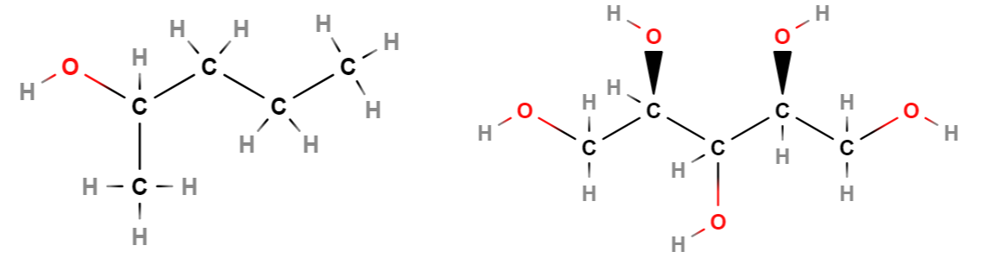
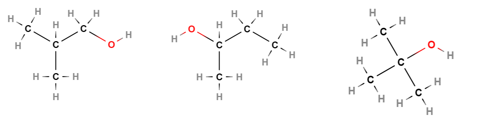
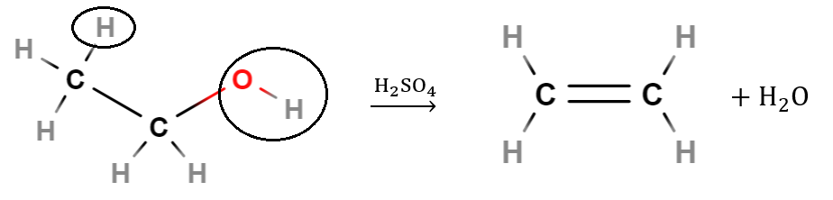
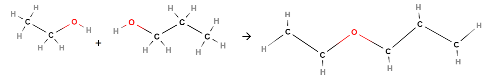
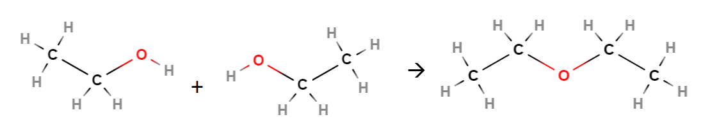
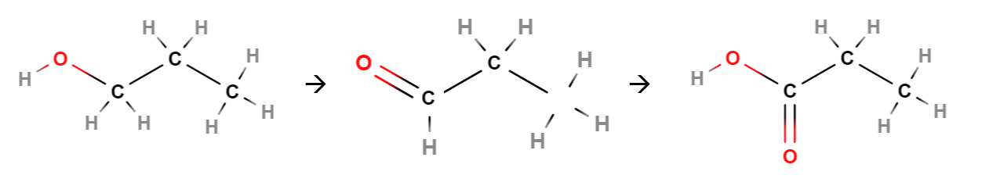
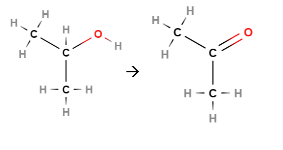

Alkoholit
Contents
Alkoholit#
Alkoholeissa funktionaalisena ryhmänä on \(\text{OH}\), joka on kiinnittynyt johonkin sellaiseen hiileen, joka on kiinni toisessa hiilessä yksinkertaisella sidoksella. Tarkemmin sanottuna hiilessä on kiinni happi, ja hapessa on kiinni vety.
Alkoholin \(\text{OH}\)-ryhmä tekee molekyylistä lievästi poolisen, joten alkoholimolekyylit sitoutuvat toisiinsa tiukemmin kuin vastaavan kokoiset hiilivetymolekyylit. Siksi alkoholien kiehumispisteet ovat huomattavasti korkeammat kuin hiilivetyjen. Myös alkoholien kiehumispiste on sitä korkeampi, mitä suurempi molekyyli on kyseessä. Lyhytketjuiset alkoholit liukenevat sekä veteen että orgaanisiin liuottimiin. Taulukon tiedot ovat peräisin taulukot.com -sivustolta.
nimi |
molekyylikaava |
sulamispiste |
kiehumispiste |
|---|---|---|---|
metanoli |
\(\text{CH}_3\text{OH}\) |
-98 \(^{\circ}\)C |
65 \(^{\circ}\)C |
etanoli |
\(\text{C}_2\text{H}_5\text{OH}\) |
-114 \(^{\circ}\)C |
78 \(^{\circ}\)C |
1-propanoli |
\(\text{C}_3\text{H}_7\text{OH}\) |
-126 \(^{\circ}\)C |
97 \(^{\circ}\)C |
2-propanoli |
\(\text{C}_3\text{H}_7\text{OH}\) |
-90 \(^{\circ}\)C |
82 \(^{\circ}\)C |
Alkoholit nimetään lisäämällä hiilivetyketjun nimen perään -oli. Jos \(\text{OH}\)-ryhmä ei ole hiiliketjun jommassakummassa päädyssä, niin sen paikka ilmaistaan numerolla.
Alkoholiryhmiä voi olla useampikin kuin yksi, mutta ei kuitenkaan samassa hiiliatomissa. Tällöin nimi ei välttämättä muodostu -oli -päätteellä, vaan \(\text{OH}\)-ryhmiä merkitään nimellä hydroksi. Kun alkoholiryhmiä on useita, alkoholia kutsutaan moniarvoiseksi.
Esim. Vasemmalla 2-pentanoli (pentan-2-oli), oikealla ksylitoli eli 1,2,3,4,5-pentahydroksipentaani.

Alkoholien luokittelu#
Alkoholit luokitellaan primaarisiin, sekundaarisiin ja tertiäärisiin sen mukaan, kuinka monta hiiliatomia on kiinni siinä hiilessä, johon \(\text{OH}\)-ryhmä on kiinnittynyt. Tätä hiiltä kutsutaan \(\text{OH}\)-ryhmää kantavaksi hiileksi. Se, mihin luokkaan alkoholi kuuluu, vaikuttaa eräisiin alkoholien reaktioihin.
Primaarinen: \(\text{OH}\)-ryhmää kantavassa hiilessä on kiinni yksi hiili.
Sekundaarinen: \(\text{OH}\)-ryhmää kantavassa hiilessä on kiinni kaksi hiiltä.
Tertiäärinen: \(\text{OH}\)-ryhmää kantavassa hiilessä on kiinni kolme hiiltä.
Esim. Mihin luokkiin kuvan alkoholit kuuluvat? Mitkä ovat niiden molekyylikaavat ja nimet?

Ratkaisu
Vasemmalla: primaarinen alkoholi, 1-butanoli, \(\text{C}_4\text{H}_9\text{OH}\).
Keskellä: sekundaarinen alkoholi, 2-butanoli, \(\text{C}_4\text{H}_9\text{OH}\).
Oikealla: tertiäärinen alkoholi, 2-metyyli-2-propanoli, \(\text{C}_4\text{H}_9\text{OH}\).
Alkoholien reaktioita#
Alkoholien perusreaktioita ovat eliminaatio ja kondensaatio. Kummassakin reaktiossa alkoholista irtoaa veden ainesosat eli \(\text{OH}\)-ryhmä ja yksi vety. Niiden tilalle muodostuu kaksoissidos tai sidos toisen alkoholimolekyylin kanssa.
Eliminaatio
Rikkihapon \(\text{H}_2 \text{SO}_4\) katalysoimana alkoholi muuttuu alkeeniksi, ja vapautuu vettä. Katalysoiminen tarkoittaa sitä, että rikkihappo ei itse osallistu reaktioon, mutta sen läsnäoloa tarvitaan reaktion tapahtumiseen. Rikkihappoa ei kirjoiteta mukaan reaktioyhtälön lähtöaineisiin tai tuotteisiin, vaan se merkitään reaktionuolen yläpuolelle.
Nimi eliminaatio viittaa siihen, että molekyylistä poistuu jotakin, tässä tapauksessa siis sellaiset atomit, joista muodostuu vesimolekyyli. Vety poistuu \(\text{OH}\)-ryhmää kantavan hiilen viereisestä hiilestä. Kumpaankin hiileen jää vapaa sidoskohta, ja ne keskenään muodostavat kaksoissidoksen.
Esim. Etanolin eliminaatio: \(\text{CH}_3 \text{CH}_2 \text{OH} \overset{\text{H}_2\text{SO}_4}{\longrightarrow} \text{CH}_2=\text{CH}_2+\text{H}_2 \text{O}\). Kuvaan on rengastettu alkoholista poistuvat atomit. Päätyhiilen vedyistä mikä tahansa voi irrota.

Kondensaatio
Alkoholimolekyylit voivat myös reagoida eliminaatioreaktion mukaisesti keskenään, jolloin reaktion nimi onkin kondensaatio. Tällöin toisen molekyylin päädystä poistuu \(\text{OH}\)-ryhmä ja toisesta vain vety. Loppuosat molekyyleistä yhdistyvät toisiinsa siten, että väliin jää ns. happisilta \(-\text{O}-\). Alkoholit voivat olla samanlaisia tai erilaisia. Tällaisen yhdisteen yleisnimi on eetteri. Eettereitä käytetään mm. liuottimina kemian laboratorioissa. Lisäksi reaktiossa syntyy vettä.
Eetterit nimetään siten, että loppuun tulee -eetteri, ja alkuun tulee -yyli-päätteisinä niiden hiilivetyrunkojen nimet, jotka ovat happisillan molemmin puolin. Jos alkoholit, joista eetteri muodostui, ovat samanlaisia, riittää kirjoittaa nimi yhden kerran, mutta tällöin eteen tulee liite di ilmaisemaan sitä, että molekyylin osia on kaksi kappaletta.
Esim. Etanolista ja propanolista muodostuu etyylipropyylieetteri:

Esim. Kahdesta etanolimolekyylistä muodostuu dietyylieetteri:
\(2~\text{CH}_3 \text{CH}_2 \text{OH} \overset{\text{H}_2\text{SO}_4}{\longrightarrow} \text{CH}_3 \text{CH}_2-\text{O}-\text{CH}_2 \text{CH}_3+\text{H}_2 O\)

Hapettumisreaktiot
Hapettumisreaktiot ovat yleisesti reaktioita, jossa vedyn määrä molekyylissä vähenee tai hapen määrä lisääntyy. Hapetin on jokin aine, joka saa hapettumisen tapahtumaan. Esim. \(\text{KMnO}_4\) (kaliumpermanganaatti) on tällainen aine.
Alkoholien hapettumisreaktion tuote riippuu siitä, millainen alkoholi on kyseessä. Primaarinen alkoholi voi hapettua aldehydiksi. Aldehydi on yhdiste, jossa hiiliketjun päätyhiilessä on kaksoissidoksella kiinni happi (karbonyyliryhmä) ja yksinkertaisella sidoksella vety. Aldehydin tunnistaa nimen loppupäätteestä -naali, esim. kuvassa keskellä propanaali.
Aldehydi voi edelleen hapettua karboksyylihapoksi. Tällöin happiatomi liittyy hiiliketjun päätyhiilen ja vedyn väliin. Karboksyylihapon tunnistaa nimen loppupäätteestä -happo. Nimen alkuosa muodostuu hiiliketjun pituuden perusteella, esimerkiksi kuvassa oikealla propaanihappo.

Sekundaarinen alkoholi voi hapettua ketoniksi. Ketoni on yhdiste, jossa hiiliketjun johonkin muuhun kuin päädyssä sijaitsevaan hiileen yhdistyy happi kaksoissidoksella. Ketonin nimen pääte on -noni, esim. kuvassa oikealla 2-propanoni.
